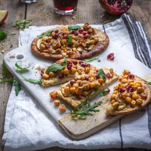

Pizza Naan

Aujourd’hui je vous retrouve avec une de mes recettes coups de cœur de cette nouvelle année! De plus, il s’agirait d’une nouvelle tendance, la pizza naan!
Le Huffingtonpost a publié récemment un article relatant les prévisions 2017 en matière de tendance culinaire et notamment celles de Mintel (qui est un spécialiste mondial de l’étude de marché) et qui annonçait que pour cette nouvelle année, côté cuisine, les consommateurs souhaiteraient gagner du temps dans la préparation mais sans pour autant sacrifier la qualité de la dégustation. En parallèle, pinterest faisait le point sur les tendances food à venir pour cette nouvelle année et les résultats coïncident plutôt bien avec les prévisions de Mintel. Pour répondre à la demande du rapide mais bon, la pizza naan a sorti son épingle du jeu (entre autres) et semblerait séduire pas mal de consommateurs. Je vous mentirai si je vous disais que je ne connaissais pas ce type de pizza car j’ai déjà eu la chance d’en faire et d’en goûter avec des amis il y a déjà quelque temps de ça. Ce n’est donc pas une nouveauté et vous pouvez d’ailleurs retrouver pas mal de recette sur un bon nombre de sites anglo-saxons. Pour la petite explication , une pizza naan est une préparation ressemblant à une pizza sauf que l’on n’utilise pas de pâte à pizza comme base mais des pains indiens (les fameux pains naans). Vous pouvez ensuite garnir votre pain naan comme une pizza avec tout ce que vous aimez et enfournez 10-15 minutes à 200°. C’est rapide et vraiment délicieux! J’ai voulu vous présenter ma version de la naan pizza en y mettant des pommes, des pois chiches, du zaatar et de la citrouille! Bref une pizza naan aux saveurs quelque peu orientales et surtout pleine de bonnes choses :). Le pain naan était plutôt petit donc en version individuelle accompagné d’une salade de roquette c’est exactement ce qu’il nous fallait. Accompagné d’un jus de grenade même si l’on boit que très rarement autre chose que de l’eau c’était délicieux!! J’espère que cette recette vous plaira, n’hésitez pas à me dire ce que vous pensez de ce qui devrait être une nouvelle tendance culinaire et moi je vous dis à très bientôt avec un nouvel article!
Enregistrer
Ingrédients
- Pains naans - 2 (les miens faisaient 60g chacun)
- Pommes - 1/2 à 1 selon la taille
- Pois chiches - 100g
- Potimarron, potiron ou citrouille - 100g
- Zaatar (à défaut les épice ou herbes aromatiques de votre choix) - 1 pincée
- Huile d'olive - 1 càc
- Poivre noir
- Fromage de votre choix (un fromage Corse pour moi) - 35g
- Huile d'olive - 2 càc
- Zaatar (à défaut les épice ou herbes aromatiques de votre choix) - 1 càc
Instructions
- Préchauffer le four à 200°
- Couper la courge en petits dès
- Mélanger les pois chiches et la courge
- Assaisonner d'un filet d'huile d'olive et de zaatar
- Étaler sur une plaque à pâtisserie
- Enfourner pour 15-20 minutes
- A la sortie du four, réserver
- Dans un petit contenant mélanger les 2càc d'huile d'olive et la càc de zaatar
- Badigeonner vos pains naans de ce mélange
- Découper de très fins quartiers de pommes et déposez-les sur le pain naan
- Recouvrir de la moitié du fromage
- Terminer par le mélange pois chiches-courge
- Saupoudrer du fromage restant et d'un peu de zaatar
- Enfourner à 200° pendant 12-15 minutes (vérifier la cuisson car d'un four à l'autre elle peut varier)
- Au moment de servir ajouter des petits "graines de grenade" et servir accompagné d'une petite salade
- Bon appétit!
Les tips de la communauté
Excellente réception avec admiration pour les photos et les saveurs. Recette originale qui intrigue beaucoup de lecteurs. Demandes fréquentes pour la recette des pains naan maison. Validée comme une idée de plat tendance et délicieuse.
Astuces
- Pains naan peuvent être faits maison ou achetés tout prêts
- Les photos sont sublimes et inspirent confiance dans la recette
- Saveurs et présentation très tendance
- Pains naan se conservent et peuvent être réutilisés facilement
Variantes suggérées
- Faire les pains naan maison pour plus d'authenticité
- Adapter les garnitures selon les préférences